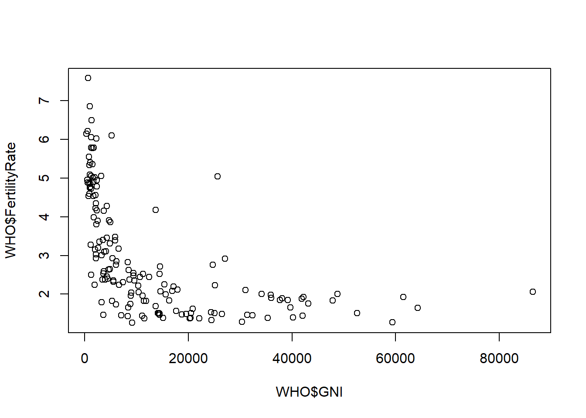
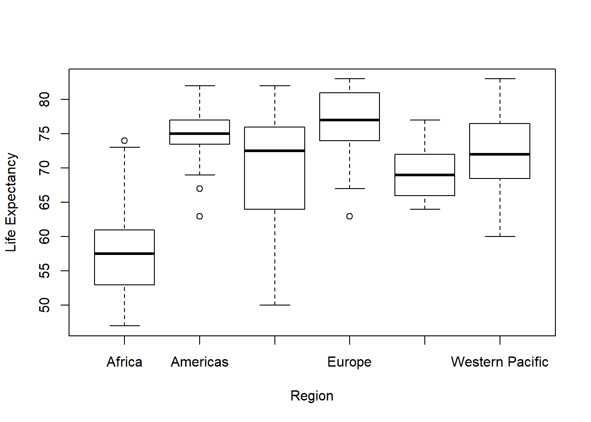
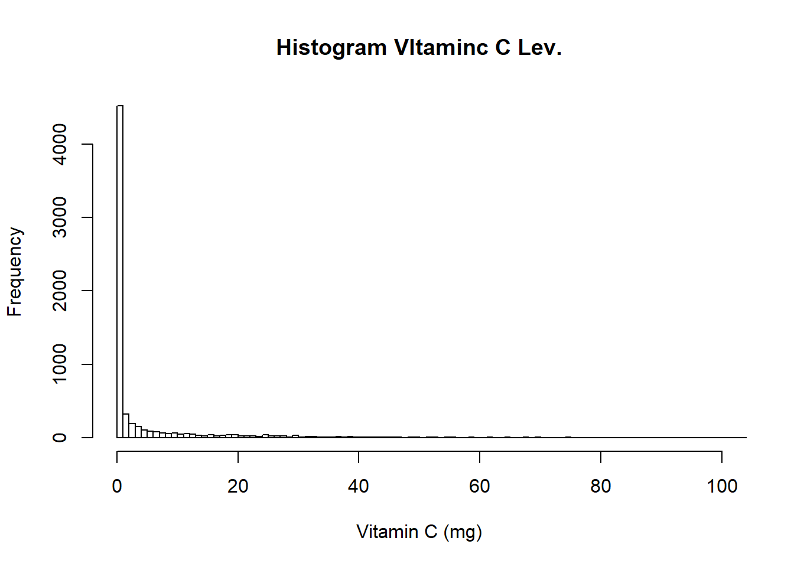
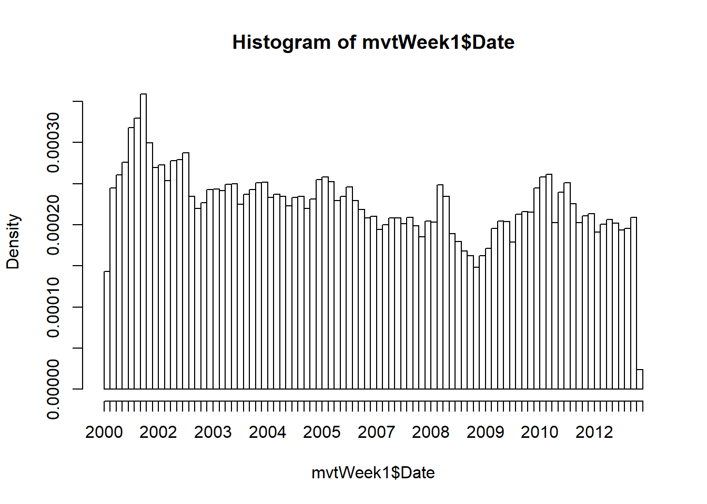
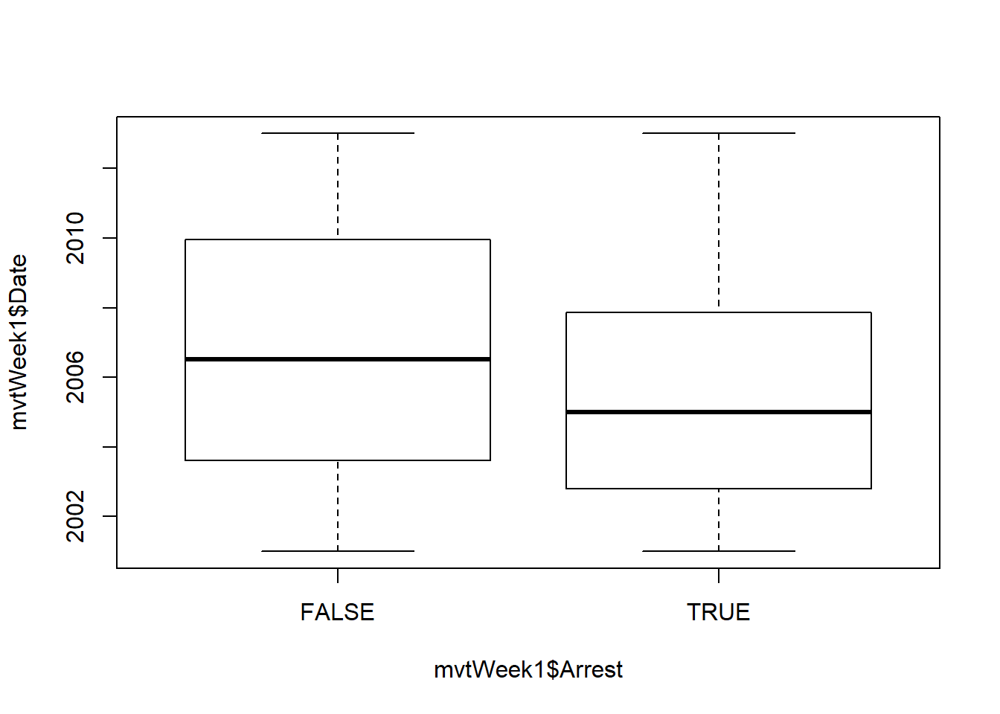
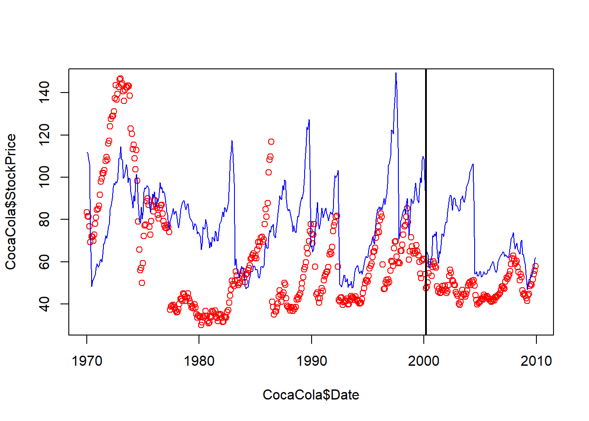

Unit 2 Introduction
2.1 Working with data
rbind - combines data frames by stacking rows. Example:
## [1] 50dataframe1 <- cars # Assign cars to variable in environment
dataframe2 <- cars
boundframe <- rbind(dataframe2, dataframe1)
nrow(boundframe)## [1] 1002.1.1 Loading data files
2.1.2 Summary Statistics
## 'data.frame': 194 obs. of 13 variables:
## $ Country : Factor w/ 194 levels "Afghanistan",..: 1 2 3 4 5 6 7 8 9 10 ...
## $ Region : Factor w/ 6 levels "Africa","Americas",..: 3 4 1 4 1 2 2 4 6 4 ...
## $ Population : int 29825 3162 38482 78 20821 89 41087 2969 23050 8464 ...
## $ Under15 : num 47.4 21.3 27.4 15.2 47.6 ...
## $ Over60 : num 3.82 14.93 7.17 22.86 3.84 ...
## $ FertilityRate : num 5.4 1.75 2.83 NA 6.1 2.12 2.2 1.74 1.89 1.44 ...
## $ LifeExpectancy : int 60 74 73 82 51 75 76 71 82 81 ...
## $ ChildMortality : num 98.5 16.7 20 3.2 163.5 ...
## $ CellularSubscribers : num 54.3 96.4 99 75.5 48.4 ...
...## Country Region Population
## Afghanistan : 1 Africa :46 Min. : 1
## Albania : 1 Americas :35 1st Qu.: 1696
## Algeria : 1 Eastern Mediterranean:22 Median : 7790
## Andorra : 1 Europe :53 Mean : 36360
## Angola : 1 South-East Asia :11 3rd Qu.: 24535
## Antigua and Barbuda: 1 Western Pacific :27 Max. :1390000
## (Other) :188
## Under15 Over60 FertilityRate LifeExpectancy
## Min. :13.12 Min. : 0.81 Min. :1.260 Min. :47.00
...## [1] 28.73242## [1] 10.53457## [1] 862.1.3 Plots
2.1.3.1 Scatter Plots

Outliers = subset(WHO, GNI>10000 & FertilityRate >2.5) # subset Outliers based on visual inspection of plot
Outliers[c("Country", "GNI", "FertilityRate")] # Subset 3 variables based on Outliers ## Country GNI FertilityRate
## 23 Botswana 14550 2.71
## 56 Equatorial Guinea 25620 5.04
## 63 Gabon 13740 4.18
## 83 Israel 27110 2.92
## 88 Kazakhstan 11250 2.52
## 131 Panama 14510 2.52
## 150 Saudi Arabia 24700 2.762.1.3.3 Box Plots

2.1.4 Summary tables
##
## Africa Americas Eastern Mediterranean
## 46 35 22
## Europe South-East Asia Western Pacific
## 53 11 27## Africa Americas Eastern Mediterranean
## 5.220652 10.943714 5.620000
## Europe South-East Asia Western Pacific
## 19.774906 8.769091 10.162963## Africa Americas Eastern Mediterranean
## 69.09167 92.43529 82.52000
## Europe South-East Asia Western Pacific
## 98.78077 71.78000 90.122222.2 Recitation - USDA Food Database
2.2.1 Data Analysis - Recitation
## 'data.frame': 7058 obs. of 16 variables:
## $ ID : int 1001 1002 1003 1004 1005 1006 1007 1008 1009 1010 ...
## $ Description : Factor w/ 7054 levels "ABALONE,MIXED SPECIES,RAW",..: 1303 1302 1298 2303 2304 2305 2306 2307 2308 2309 ...
## $ Calories : int 717 717 876 353 371 334 300 376 403 387 ...
## $ Protein : num 0.85 0.85 0.28 21.4 23.24 ...
## $ TotalFat : num 81.1 81.1 99.5 28.7 29.7 ...
## $ Carbohydrate: num 0.06 0.06 0 2.34 2.79 0.45 0.46 3.06 1.28 4.78 ...
## $ Sodium : int 714 827 2 1395 560 629 842 690 621 700 ...
## $ SaturatedFat: num 51.4 50.5 61.9 18.7 18.8 ...
## $ Cholesterol : int 215 219 256 75 94 100 72 93 105 103 ...
...## ID
## Min. : 1001
## 1st Qu.: 8387
## Median :13294
## Mean :14260
## 3rd Qu.:18337
## Max. :93600
##
## Description
## BEEF,CHUCK,UNDER BLADE CNTR STEAK,BNLESS,DENVER CUT,LN,0" FA: 2
...## [1] "ID" "Description" "Calories" "Protein" "TotalFat"
## [6] "Carbohydrate" "Sodium" "SaturatedFat" "Cholesterol" "Sugar"
## [11] "Calcium" "Iron" "Potassium" "VitaminC" "VitaminE"
## [16] "VitaminD"## [1] 41542.2.2 Histogram - Recitation
#Histogram - xlim sets limits for x-axis. breaks sets how many histogram bins
hist(USDA$VitaminC, xlab = "Vitamin C (mg)", main = "Histogram VItaminc C Lev.", xlim = c(0,100), breaks=2000) 
2.2.3 Summary tables - Recitation
# Add 1 if Sodium value greater than mean, and 0 if less
USDA$HighSodium <- as.numeric(USDA$Sodium > mean(USDA$Sodium, na.rm = TRUE)) #as.numeric converts the TRUE or FALSE to 1, or 0
USDA$HighProtein <- as.numeric(USDA$Protein > mean(USDA$Protein, na.rm = TRUE))
USDA$HighFat <- as.numeric(USDA$SaturatedFat > mean(USDA$SaturatedFat, na.rm = TRUE))
USDA$HighCarbs <- as.numeric(USDA$Carbohydrate > mean(USDA$Carbohydrate, na.rm = TRUE))
table (USDA$HighSodium, USDA$HighFat)##
## 0 1
## 0 3350 1332
## 1 1478 589## 0 1
## 2.558945 3.1972942.3 Assignment
2.3.1 Part 1 - Analytical Detective
2.3.1.1 Problem 1
Problem 1.1 - How many rows of data (observations) are in this dataset?
## [1] 191641Problem 1.2 - How many rows of data (observations) are in this dataset?
## [1] 11Problem 1.3 - Using the “max” function, what is the maximum value of the variable “ID”?
## [1] 9181151Problem 1.5 - How many observations have value TRUE in the Arrest variable (this is the number of crimes for which an arrest was made)?
## [1] 155362.3.1.2 Problem 2
Problem 2.2 - Convert Date to Date Object in R
DateConvert <- as.Date(strptime(mvtWeek1$Date, "%m/%d/%y %H:%M")) #Original date format is Month/Day/Year Hour:Minute
head(DateConvert)## [1] "2012-12-31" "2012-12-31" "2012-12-31" "2012-12-31" "2012-12-31"
## [6] "2012-12-31"mvtWeek1$Month <- months(DateConvert)
mvtWeek1$Weekday <- weekdays(DateConvert)
mvtWeek1$Date <- DateConvertProblem 2.3 - In which month did the fewest motor vehicle thefts occur?
## February
## 4## Friday
## 1Problme 2.5 - Which month has the largest number of motor vehicle thefts for which an arrest was made?
#I plan to do some benchmarking on a large dataset to see which is more efficient
table(mvtWeek1$Arrest, mvtWeek1$Month) # Look at table for min ORR##
## April August December February January July June March May November
## FALSE 14028 15243 15029 12273 14612 15477 14772 14460 14848 14807
## TRUE 1252 1329 1397 1238 1435 1324 1230 1298 1187 1256
##
## October September
## FALSE 15744 14812
## TRUE 1342 1248## January
## 52.3.1.3 Problem 3
Problem 3.1 - Visualizing Crime Trends


2.3.1.4 Problem 4
Problem 4.1 - Which locations are the top 5 for motor vehicle thefts
##
## AIRPORT BUILDING NON-TERMINAL - SECURE AREA
## 1
## AIRPORT EXTERIOR - SECURE AREA
## 1
## ANIMAL HOSPITAL
## 1
## APPLIANCE STORE
## 1
## CTA TRAIN
...TopLocations = c("STREET", "PARKING LOT/GARAGE(NON.RESID.)", "ALLEY", "GAS STATION", "DRIVEWAY - RESIDENTIAL")
nrow(Top5<-subset(mvtWeek1, LocationDescription %in% TopLocations)) #Number of Obs. in Top5 Locations## [1] 1775102.3.2 Part 2 - Stock Dynamics
2.3.2.1 Read in csv files and convert dates
#####A lot of the problems get repetitive, so I’ll only include questions that intoroduce new functions or are interestng
IBM <- read.csv("week1/IBMStock.csv")
GE <- read.csv("week1/GEStock.csv")
ProcterGamble <- read.csv("week1/ProcterGambleStock.csv")
CocaCola <- read.csv("week1/CocaColaStock.csv")
Boeing <- read.csv("week1/BoeingStock.csv")
IBM$Date <- as.Date(IBM$Date, "%m/%d/%y")
GE$Date <- as.Date(GE$Date, "%m/%d/%y")
ProcterGamble$Date <- as.Date(ProcterGamble$Date, "%m/%d/%y")
CocaCola$Date <- as.Date(CocaCola$Date, "%m/%d/%y")
Boeing$Date <- as.Date(Boeing$Date, "%m/%d/%y")
min(rbind(Boeing,CocaCola,GE,IBM,ProcterGamble)$Date)# Problem 1.2## [1] "1970-01-01"2.3.2.3 Problem 2 - Visualizing Stock Dynamics
plot(CocaCola$Date, CocaCola$StockPrice, col="red")
lines(ProcterGamble$Date, ProcterGamble$StockPrice, col="blue")
abline(v=as.Date(c("2000-03-01")), lwd=2) #abline adds straight line to a plot
2.3.2.4 Problem 4- Monthly Trends
## April August December February January July June March
## 152.1168 140.1455 140.7593 152.6940 150.2384 139.0670 139.0907 152.4327
## May November October September
## 151.5022 138.0187 137.3466 139.08852.3.3 Part 3 - Demographics and Employment in the United States
2.3.3.1 Problem 1 - Loading Data
## 'data.frame': 131302 obs. of 14 variables:
## $ PeopleInHousehold : int 1 3 3 3 3 3 3 2 2 2 ...
## $ Region : Factor w/ 4 levels "Midwest","Northeast",..: 3 3 3 3 3 3 3 3 3 3 ...
## $ State : Factor w/ 51 levels "Alabama","Alaska",..: 1 1 1 1 1 1 1 1 1 1 ...
## $ MetroAreaCode : int 26620 13820 13820 13820 26620 26620 26620 33660 33660 26620 ...
## $ Age : int 85 21 37 18 52 24 26 71 43 52 ...
## $ Married : Factor w/ 5 levels "Divorced","Married",..: 5 3 3 3 5 3 3 1 1 3 ...
## $ Sex : Factor w/ 2 levels "Female","Male": 1 2 1 2 1 2 2 1 2 2 ...
## $ Education : Factor w/ 8 levels "Associate degree",..: 1 4 4 6 1 2 4 4 4 2 ...
## $ Race : Factor w/ 6 levels "American Indian",..: 6 3 3 3 6 6 6 6 6 6 ...
...2.3.3.2 Problem 2 - Evaluating Missing values
##
## FALSE TRUE
## Midwest 24609 6075
## Northeast 21432 4507
## South 33535 7967
## West 26388 6789## District of Columbia New Jersey Rhode Island
## 0.00000000 0.00000000 0.00000000
## California Florida Massachusetts
## 0.02048401 0.03923092 0.06492199
## Maryland New York Connecticut
## 0.06937500 0.08060769 0.08568406
## Illinois Colorado Arizona
## 0.11221881 0.12991453 0.13154450
## Nevada Texas Louisiana
## 0.13308190 0.14370496 0.16137931
...mean treats boolean variables as 1s and 0s.
2.3.3.3 Problem 3- Integrating Metropolitan Area Data
MetroAreaMap <- read.csv("week1/MetroAreaCodes.csv")
CountryMap <- read.csv("week1/CountryCodes.csv")
str(MetroAreaMap)## 'data.frame': 271 obs. of 2 variables:
## $ Code : int 460 3000 3160 3610 3720 6450 10420 10500 10580 10740 ...
## $ MetroArea: Factor w/ 271 levels "Akron, OH","Albany-Schenectady-Troy, NY",..: 12 92 97 117 122 195 1 3 2 4 ...Problem 3.2 Merge the Maps into CPS data frame to Replace the code with actual values
CPS <- merge(CPS, MetroAreaMap, by.x="MetroAreaCode", by.y="Code", all.x=TRUE) #all.x prevents NA observations froom being discarded
CPS <- merge(CPS, CountryMap, by.x="CountryOfBirthCode", by.y="Code", all.x=TRUE)
summary(CPS)## CountryOfBirthCode MetroAreaCode PeopleInHousehold Region
## Min. : 57.00 Min. :10420 Min. : 1.000 Midwest :30684
## 1st Qu.: 57.00 1st Qu.:21780 1st Qu.: 2.000 Northeast:25939
## Median : 57.00 Median :34740 Median : 3.000 South :41502
## Mean : 82.68 Mean :35075 Mean : 3.284 West :33177
## 3rd Qu.: 57.00 3rd Qu.:41860 3rd Qu.: 4.000
## Max. :555.00 Max. :79600 Max. :15.000
## NA's :34238
## State Age Married Sex
## California :11570 Min. : 0.00 Divorced :11151 Female:67481
...## Albany, GA
## 0.000000000
## Altoona, PA
## 0.000000000
## Amarillo, TX
## 0.000000000
## Anderson, IN
## 0.000000000
## Appleton,WI
## 0.000000000
...